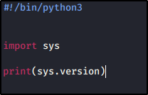
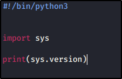
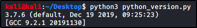

Importing Modues in Python
Modules Definition:
Module are pieces of code added to perform additional actions. The “import” keywork is needed
You can import only a part with “from module_name import module module_part”
Syntax:
import sys # Import the “sys” module
from datetime import datetime # Import “datetime” variable from “datetime” module
from datetime import datetime as dt # Import “datetime” variable from “datetime” module with alias “dt”
 



Important Modules in Python:
sys # System Functions and Parameters